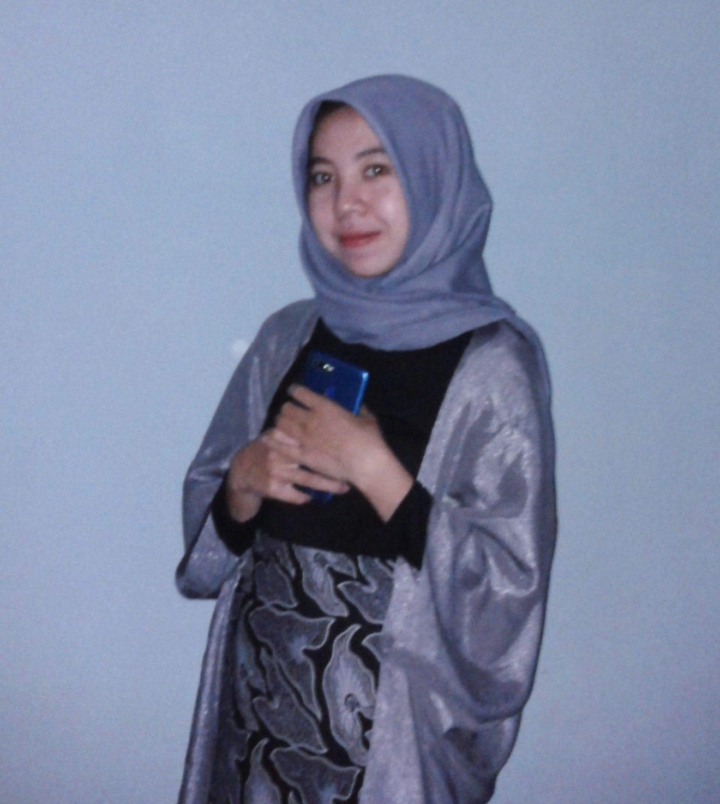

Haloo!
Perkenalkan saya Dina Nurul Fauziyah
Mentee program Web Development di Infinte Learning Indonesia
Tentang Saya
Saya adalah seorang mahasiswa aktif semester 5 prodi Sistem Informasi di Fakultas Ilmu Komputer Universitas Kuningan. Saat ini saya sedang mengikuti kegiatan MSIB, saya adalah salah satu mentee program Web Development di Infinte Learning Indonesia. Sebelumnya saya juga pernah mengikuti pelatihan dan juga berhasil mengikuti uji kompetensi bersertifikat yang diadakan oleh VSGA. Sertifikat yang saya dapatkan yaitu sebagai Junior Web Developer
Nama Lengkap : Dina Nurul Fauziyah
Tempat Tanggal Lahir : Kuningan, 05 Desember 2001
Agama : Islam
Alamat : Desa Gunung Keling, Kab.Kuningan Jawa Barat
No.telpon : 085772838331
Jenjang terakhir pendidikan saya addalah SMK dari jurusan Rekayasa Perangkat Lunak(RPL). Saat ini saya sedang menempuh pendidikan S1 jurusan Sistem Informasi semester 5 di Fakultas Ilmu Komputer Universitas Kuningan
Skill
Dibawah ini beberapa kemampuan yang saya miliki
Web development
Dalam pengembangan web ini saya berpengalaman mengikuti pelatihan dan juga uji kompetensi bersertifikat yang diadakan oleh VSGA Kominfo dengan predikat Junior Web Development
Web Design
Dalam bidang ini saya berpengalaman beberapa kali membuat project besar yaitu saat pelaksanaan PKL di jenjang SMK, lalu saat ujian praktikum dikampus dan juga saat uji kompetensi nasional
Analisis
Dalam analisis ini saya berpengalaman menganalisis suatu project dalam mata kuliah untuk memenuhi nilai mata kuliah tersebut dengan nilai yang memuaskan
Contact
Jika memiliki pertanyaan atau keperluan lain silahkan isi form dibawah ini!